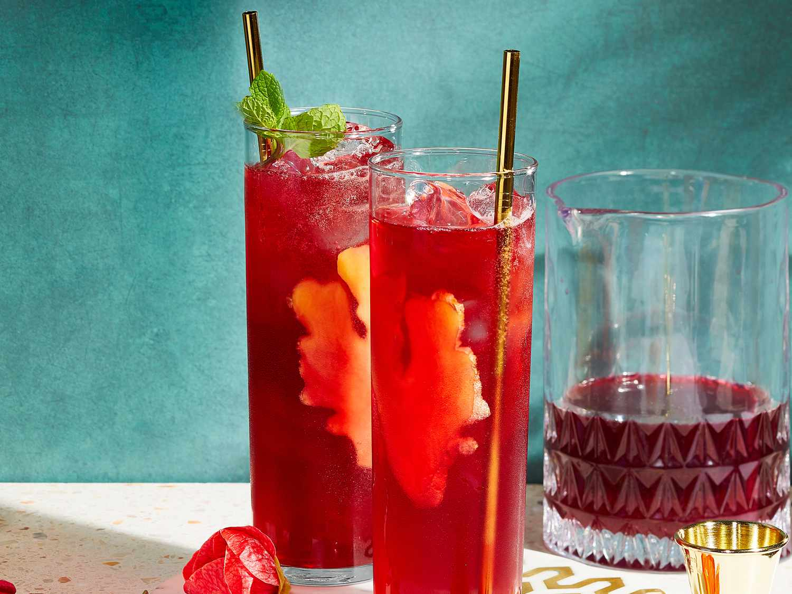

Ginger-Hibiscus Sparkler

Description
Bridge tipsy December and dry January with this less-leaded
(but no-less-tasty) sipper. Spicy ginger liqueur, nonalcoholic
ginger beer,
and sweet-tart hibiscus provide all the buzz you need.
Ingredients
- ¼ cup dried hibiscus petals
- 1 ½ cups boiling water
- ½ cup fresh lime juice
- ½ cup ginger liqueur (such as Domaine de Canton®)
- ½ cup ginger beer
- 4 sprigs fresh mint for garnish
- fresh ginger, peeled and thinly sliced
Steps
- Steep hibiscus flowers in boiling water for 5 minutes;
strain into a heatproof
bowl set in a bowl of ice to speed cooling. Cool completely.
- Transfer to a small pitcher. Stir in lime juice and ginger
liqueur. Pour into ice-filled Collins glasses
(about 5 oz. per glass) and top each with 1 oz. ginger beer.
Garnish with mint sprigs and ginger slices.